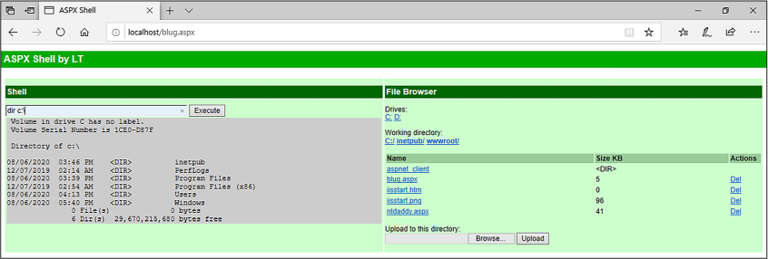
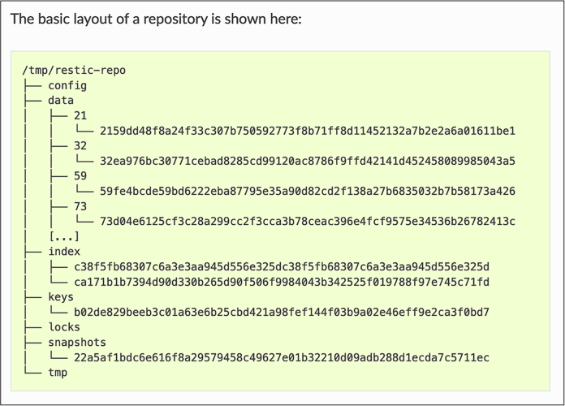
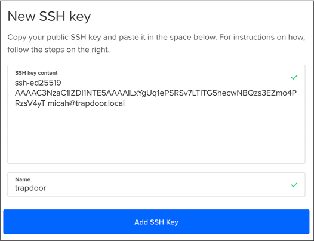
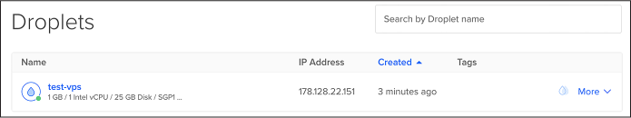

You’ll also learn to create Linux cloud servers and connect to them securely for faster internet and extra disk space. As practice, you’ll use a remote server to download and briefly examine hacked data from the Oath Keepers militia, a far-right extremist group that participated in the January 6, 2021, US Capitol insurrection.
Introducing for Loops
The BlueLeaks torrent you downloaded in Exercise 2-1 is 269GB and
contains 168 different ZIP files ranging from 49GB to half a kilobyte
each. In theory, you could manually unzip these 168 files one at a time
to access the data. However, this slow, tedious process becomes
impractical with even larger datasets (imagine individually extracting
10,000 ZIP files). In this section, you’ll learn to speed up this task
by automating it with for
loops.
A for loop is a type of
command that runs a piece of code once for every item in a list. Each
time the code loops, it stores the current item in a variable, which
you can think of as a placeholder for some value. Code variables are
similar to those in math, where the value of x might be different for
different problems, but in shell scripting, the values can be text or
numbers. Even though each loop runs the same code, the results may be
different, because the value of the variable changes with each loop.
For example, the following for loop displays the numbers 1, 2, and 3:
for NUMBER in 1 2 3
do
echo $NUMBER
done
This for loop starts with
the syntax for
variable_name
in list_of_items, followed by do, followed by the commands to run for
each item in the list, followed by done. In this case, variable_name is NUMBER and list_of_items is 1 2 3. The value of the NUMBER variable will be 1 the first time the code loops,
2 during the second loop,
and 3 during the third loop.
The echo command displays
something, in this case $NUMBER, to the terminal. The dollar sign
($) means the code should
display the value of the NUMBER variable, rather than the word
NUMBER.
NOTE Using all caps is a common convention for variable names, but it’s not
required. For example, you could call the variable number instead of NUMBER and display it with
echo $number instead of echo $NUMBER.
Variable names are case sensitive.
When you run the previous for loop in your terminal, you should see
the following output:
1
2
3
You can also use a for loop
to loop through the output of another shell command, as shown in the
following code:
for FILENAME in $(ls *.zip)
do
echo "ZIP filename: $FILENAME"
done
The variable name in this code is
FILENAME. Next,
$(ls *.zip) tells your
machine to run the ls *.zip
command. This command outputs a list of all of the ZIP files in the
current folder, producing a list of filenames. The for loop cycles through that list and runs
the code between do and
done for each filename. In
this case, the echo command
prints the filenames to the terminal in ZIP filename: filename format.
For example, here’s what it looks like when I run this code in the BlueLeaks folder in my terminal on macOS:
micah@trapdoor BlueLeaks % for FILENAME in $(ls *.zip)
for> do
for> echo "ZIP filename: $FILENAME"
for> done
ZIP filename: 211sfbay.zip
ZIP filename: Securitypartnership.zip
ZIP filename: acprlea.zip
--snip--
Each time the code loops, the value of FILENAME is the name of one of the ZIP files.
When the echo command runs,
it displays those filenames, one after another.
Exercise 4-1: Unzip the BlueLeaks Dataset
In this exercise, you’ll write a script to unzip all the ZIP files in BlueLeaks so you can work with the data they contain. Once unzipped, the files will take 271GB of additional space on your datasets USB.
If you’re using macOS or Linux, follow the instructions in Unzip Files
on macOS or Linux next. If you’re using Windows, read that
subsection to learn how to write for loops in bash since you’ll need that
skill later in the book, but you won’t need to follow along until
Unzip Files on Windows on page 92.
Unzip Files on macOS or Linux
Open a terminal and navigate to your BlueLeaks folder by running the
following command, replacing blueleaks_path with your own folder path:
cd blueleaks_path
On Linux, I’d use this command (your path will be different):
cd /media/micah/datasets/BlueLeaks
On macOS, I’d use the following (again, your path will vary):
cd /Volumes/datasets/BlueLeaks
Run ls to see the list of files in this folder
and ls -lh to see detailed
information about these files, like their sizes.
To unzip single files, you use the following syntax:
unzip filename
For example, run this command to unzip the first file in BlueLeaks:
unzip 211sfbay.zip
This should extract the 2.6GB 211sfbay.zip file into the folder called
211sfbay. Run ls again and
you should see the new folder containing all of the hacked data from one
of the BlueLeaks sites.
However, you want to unzip all of the BlueLeaks files. Delete the 211sfbay folder:
rm -r 211sfbay
The rm command on its own
deletes files; to delete entire folders, you include -r (short for --recursive). The -r option deletes all the files in that
folder, and all the files in folders in that folder, and so on, before
finally deleting the target folder.
Navigate to your text editor, create a new folder in your exercises folder called chapter-4, and create a new file in the chapter-4 folder called exercise -4-1-unzip.sh. (Storing your script in a separate folder prevents you from polluting the dataset with your own files.) In your new file, enter the following code:
#!/bin/bash
for FILENAME in $(ls *.zip)
do
echo "Unzipping $FILENAME..."
unzip -o $FILENAME
done
Since exercise-4-1-unzip.sh is a shell script, it begins with the same
#!/bin/bash shebang as the
script in Chapter 3. After you define this
for loop, the script starts
it with do and ends it with
done, running the
echo "Unzipping $FILENAME…"
and unzip -o $FILENAME
commands over and over. The echo command displays the value of the
FILENAME variable, which
changes to a new filename with each loop, and the unzip command unzips that file. The
-o argument tells
unzip to overwrite files
if necessary, meaning that if any file being unzipped already exists,
the script will replace it with the newer version.
For example, when you run this code on BlueLeaks, the value of
FILENAME during the first
loop is 211sfbay.zip. The
code that runs in this loop is equivalent to the following commands:
echo "Unzipping 211sfbay.zip..."
unzip -o 211sfbay.zip
The second time the code loops, it runs the same
code with acprlea.zip as the
FILENAME value, and so on.
Change to your BlueLeaks folder. On my Mac, I do this by running the following command:
cd /Volumes/datasets/BlueLeaks
Next, make this shell script executable and run it as follows:
chmod +x ../exercises/chapter-4/exercise-4-1-unzip.sh
../exercises/chapter-4/exercise-4-1-unzip.sh
These commands assume that your exercises folder is in the same folder as the BlueLeaks folder. The relative path to your exercises folder is ../exercises, and the relative path to the shell script you just saved is ../exercises/chapter-4/exercise-4-1-unzip.sh.
After you run these commands, your script should begin unzipping all 168 BlueLeaks files. Sit back, relax, and perhaps enjoy a beverage while you wait for it to finish, which could take hours.
LOOPING THROUGH FILENAMES WITH SPACES
Looping over the output of
lsas you’ve just done works only if the filenames don’t contain spaces. If they did, your script would fail due to invalid filenames. For example, if you had a file calledWork Documents.zipin the folder, theforloop would consider it two files,WorkandDocuments.zip, as discussed in Chapter 3.The output of the
lscommand is a string—that is, a list of characters—with each filename separated by a newline character (\n), which represents a line break. If you have two files in a folder,readme.txtandWork Documents.zip, thelscommand outputs a string likereadme.txt\nWork Documents.zip.The bash shell includes an environment variable called
IFS (short for “internal field separator”), which the shell uses to figure out how to split strings in aforloop. By default, strings are split by any whitespace: spaces, tabs, or newlines. This is why, if you loop through the string1 2 3, you get three smaller strings—1,2, and3—separated with spaces. Likewise, looping through the stringreadme.txt\nWork Documents.zipresults in the smaller stringsreadme.txt,Work, andDocuments.zip, separated with a newline character and a space.To work with filenames with spaces, you change the value of the
IFSvariable so that it splits strings only on newline characters, but not on spaces or tabs. Then you change it back after the loop. Here’s an example:#!/bin/bash ORIGINAL_IFS=$IFS IFS=$(echo -n "\n") for FILENAME in $(ls) do echo "$FILENAME" done IFS=$ORIGINAL_IFSInside the
forloop, theFILENAMEvariable will contain the full filename, even if it includes spaces. You can use code like this to unzip files (as long as they’re all ZIP files) or open them using any other CLI program.None of the ZIP filenames in the BlueLeaks data have spaces, but you may need to use this script on filenames with spaces for future projects.
If you’re not using Windows, skip ahead to the Organize Your Files section on page 93. Otherwise, read on.
Unzip Files on Windows
Unzipping files in WSL from a USB disk formatted for Windows might be very slow, due to WSL performance problems. Fortunately, there’s a much faster way to unzip all 168 files in BlueLeaks, using PowerShell and a program called 7-Zip.
Install 7-Zip
The open source Windows archiving program 7-Zip lets you extract various types of compressed files. Download and install 7-Zip from https://www.7-zip.org. You’ll receive a warning saying that the program is made by an unknown publisher, but it’s safe to install as long as you’ve downloaded it from the official website.
After you install 7-Zip, you can use its 7z.exe program to extract
files directly from PowerShell. By default, 7z.exe should be located
in C:\Program Files\7-Zip\7z.exe. However, to run the program from
any directory, add C:\Program Files\7-Zip to your Path environment variable.
Environment variables are variables that already exist when you open
your shell, as opposed to ones that you create in a for loop or by other methods. The
Path environment variable is
a list of folders that contain programs. It contains some folders by
default, but you can also add your own. When you run 7z, PowerShell looks in each folder
listed in Path and checks
for a file called 7z.exe, then runs that program for you.
To add 7z.exe to Path,
click Start, search for environment variables, and click Edit
the System Environment Variables. In the window that opens, click
Environment Variables, and you should see a window with lists of
user variables and system variables. Double-click Path in the User
Variables box, which should show you all of the folders stored in
Path. Click New, add
C:\Program Files\7-Zip, and click OK to save. If you have a
PowerShell window open, close PowerShell and open
it again, forcing the shell to use the new changes to the Path environment variable.
You can now use the 7z
command to run 7-Zip.
Unzip in PowerShell with 7-Zip
In a PowerShell terminal, change to the BlueLeaks folder on your datasets USB disk. For example, on my computer, I run:
cd D:\BlueLeaks
Next, run the following PowerShell commands (this is the PowerShell version of the exercise-4-1-unzip.sh shell script in the previous subsection):
$ZipFiles = Get-ChildItem -Path . -Filter "*.zip"
foreach ($ZipFile in $ZipFiles) {
7z x $ZipFile.FullName
}
The first line sets the PowerShell variable $ZipFiles to the list of ZIP files it finds in
the current folder, represented by the dot (.). This is followed by a
foreach loop, which loops
through this list, setting the variable $ZipFile to the name of each file. The
7z command runs over and
over again for each different filename, unzipping each file.
When I run these commands in my PowerShell terminal, I get the following output:
Scanning the drive for archives:
1 file, 2579740749 bytes (2461 MiB)
Extracting archive: D:\BlueLeaks\211sfbay.zip
--
Path = D:\BlueLeaks\211sfbay.zip
Type = zip
Physical Size = 2579740749
--snip--
Your PowerShell window should likewise begin unzipping all 168 BlueLeaks files.
NOTE Once you’re finished with this chapter, read Appendix A and implement one of the solutions it describes for avoiding WSL performance problems to make it easier to work with big datasets like BlueLeaks in Windows going forward. You’ll use WSL for the remainder of the book, so you’ll need a plan to resolve any issues you encounter.
Organize Your Files
Your BlueLeaks folder should now be full of both ZIP files and extracted folders. Now you’ll make a separate BlueLeaks-extracted folder for the extracted data and keep the ZIP files themselves in the BlueLeaks folder so that you can continue to seed the torrent with them if you like.
Open a terminal (if you’re in Windows, switch to a WSL Ubuntu terminal again), change folders to your datasets USB disk, and run the following commands:
mv BlueLeaks BlueLeaks-extracted
mkdir BlueLeaks
mv BlueLeaks-extracted/*.zip BlueLeaks
The mv command moves or
renames files. On the first line, it renames the BlueLeaks folder
BlueLeaks-extracted. The mkdir command, which you used in Chapter
3, creates a new empty folder called
BlueLeaks. The third command moves all of the ZIP files in the
BlueLeaks-extracted folder into the newly created BlueLeaks folder.
Your datasets USB disk should now contain a folder called BlueLeaks with 250GB of ZIP files, along with another folder called BlueLeaks-extracted with 269GB of extracted hacked police data.
How the Hacker Obtained the BlueLeaks Data
We don’t know how the hacker hacked and leaked the BlueLeaks files, but we can make an educated guess based on clues from the dataset.
Imagine that it’s June 6, 2020, less than two weeks after Minneapolis cop Derek Chauvin murdered George Floyd by kneeling on his neck for over nine minutes while Floyd struggled to breathe, triggering the summer’s Black Lives Matter uprising against police violence. Millions of people took to the streets to demand police accountability and the end of racist police violence in what was “the largest movement in the country’s history,” according to the New York Times.
Now imagine you’re a hacktivist. In addition to confronting police in the streets, you’re confronting them on the internet. Using OSINT, you’ve discovered that hundreds of police websites use the same shoddy web application developed by the Texas web development firm Netsential. All these sites run on Windows, use Microsoft’s Internet Information Services (IIS) web server software, and are programmed using Microsoft’s web framework ASP.NET. They’re also all hosted from IP addresses in the same data center in Texas.
After you spend some time poking around one of these sites, the Arizona High Intensity Drug Trafficking Area (AZHIDTA), you find what you were looking for: a remote code execution vulnerability, a type of bug that lets you run commands on a remote server, like the Windows server running the AZHIDTA website. (My guess is that the vulnerability started with SQL injection, a technology beyond the scope of this book.)
WARNING I’m about to tell you about a potential URL for a hacking tool left behind by the hacker, but don’t actually try loading it in your browser because it might be illegal. Attempting to access someone else’s hacking tools is definitely a legal gray area.
To open a shell on this web server, you use a web shell, a web page that, when you submit a form with a command in it, runs that command on the web server and responds with its output. Using the vulnerability you discovered, you save a web shell into a file called blug.aspx on the web server’s disk. Loading /blug.aspx on the https://www.azhidta.org website in your browser allows you to run whatever commands you want on the server.
The web shell blug.aspx is included in the BlueLeaks dataset. In order
to understand how this web shell works, I set up a Windows virtual
machine with an IIS server to test it, as shown in Figure
4-1. The left side of the screenshot is the
shell (in which I ran the command dir c:\). The right side let me browse the
server’s filesystem and upload new files.

Figure 4-1: Testing the blug.aspx web shell in a Windows VM
I don’t know for sure if this is how the BlueLeaks hack happened, but I think it’s very likely. While researching BlueLeaks, I found the following web shell files, all timestamped late on June 6, 2020, making them among the most recently created files in the dataset:
azhidta/ntdaddy.aspx The Classic ASP web shell NTDaddy, developed around 2001 by a hacker named obzerve
azhidta/blug.aspx The ASP.NET web shell called ASPX Shell, developed in 2007 by a hacker named LT
azhidta/pscp64.exe A program that comes with PuTTY, a popular Windows tool for securely copying files to and from remote servers
icefishx/7z.exe A copy of the 7-Zip compression and extraction program
My guess is that the hacktivist first tried to create a ntdaddy.aspx web shell, but found that it didn’t work because it was developed using an earlier version of ASP called Classic ASP, while the BlueLeaks site used the modern version, ASP.NET. They then created the blug.aspx web shell instead, used that shell to upload pscp64.exe and 7z.exe, used 7z.exe to compress all of the files for a given police website, and uploaded that data to their own server with pscp64.exe.
After manually hacking one of the BlueLeaks
sites, the hacker likely automated the process for the rest of the
BlueLeaks sites. Perhaps they created a shell script that used cURL
instead of a web browser to perform the same steps. They could have run
that script in a for loop
targeting all 251 websites, uploading hundreds of gigabytes of data to
themselves, in a single Saturday evening. They then likely forgot to
delete the blug.aspx, pscp64.exe, 7z.exe, and ntdaddy.aspx files
before submitting the dataset to DDoSecrets.
Exercise 4-2: Explore BlueLeaks on the Command Line
In this exercise, you’ll start exploring the contents of your unzipped BlueLeaks files, using commands and advanced shell features that let you quickly measure file and folder size and sort and count lines of output.
Calculate How Much Disk Space Folders Use
The du command (short for
“disk usage”) is a powerful tool for assessing a new dataset. Linux and
macOS come with slightly different versions of du. The Linux version, which is part of a
software package called GNU coreutils, is better and more up to date at
the time of writing, so you’ll use it for this exercise.
Users of Linux and Windows with WSL should already have the correct
built-in du tool. If you’re
using macOS, run brew install coreutils in the terminal to install coreutils.
After this, the du command
will run the macOS version of the tool, while the gdu command will run the coreutils version
that you just installed. In the following commands, macOS users should
replace du with
gdu.
To find out how much space the extracted BlueLeaks dataset takes, open your terminal and run this command, using the path to the BlueLeaks-extracted folder on your computer:
du -sh --apparent-size /media/micah/datasets/BlueLeaks-extracted
The -s argument in this
command (short for --summarize) displays the total disk space of a
folder rather than how much space each file inside it takes up. The
-h argument (short for
--human-readable) shows file
sizes in units like kilobytes, megabytes, or gigabytes, rather than in
terms of system blocks (a unit that changes depending on how your disk
is set up). Finally, the --apparent-size argument shows you how big the files
actually are, as opposed to how much space they take up on your disk.
The command checks the size of every file in BlueLeaks and adds them all together, so it takes a while to run. When it’s done, it should tell you that the BlueLeaks-extracted folder takes up 269GB.
NOTE In addition to using -h to generate human-readable
units, you can specify which units you want to use. The -b argument, short for --bytes, shows file sizes in
bytes, -k shows them in kilobytes, and -m shows them in megabytes.
Next, you’ll measure the size of an individual
folder in BlueLeaks. Change to your BlueLeaks-extracted folder; for
example, I’d run cd /media/micah/datasets/BlueLeaks-extracted on my Linux computer. From there, run
the following command to measure the size of the ncric folder, which
contains documents from the Northern California Regional Intelligence
Center (NCRIC), the fusion center I’ve spent the most time researching:
du -sh --apparent-size ncric
The output should tell you that the ncric folder takes 19GB.
To find out the size of each folder in BlueLeaks, you could run the
du -sh --apparent-size
path command for
each folder, but it’s quicker to use another for loop. Run the following code in the
terminal:
for FOLDER in $(ls); do du -sh --apparent-size $FOLDER; done
As shown here, you can run multiple commands on the same line by
separating them with semicolons (;). This one-liner loops through the
output of the ls command,
which, since you’re currently in the BlueLeaks-extracted folder, is
the name of each BlueLeaks folder. The code stores these names in the
FOLDER variable and then,
inside each iteration of the loop, runs the
du -sh --apparent-size $FOLDER command.
Here are the first few lines of output:
2.8G 211sfbay
29M Securitypartnership
216M acprlea
65M acticaz
748M akorca
--snip--
This shows you how much disk space each folder uses.
Use Pipes and Sort Output
You now know the size of each folder in the BlueLeaks dataset. Next, you’ll sort the 168 folders in order of disk space. By determining which folders are the largest, you can quickly tell which fusion centers have the most data and therefore are probably the biggest or most active.
To sort this list of folders by the smallest file size to the largest,
use the sort command, which
takes a list of text lines and, by default, sorts them
alphanumerically; that is, text is sorted alphabetically and numbers
are sorted by their first numeral. For example, the list file1, file10, file2, …, file9 is sorted alphanumerically: since text
lines are sorted one character at a time, and since 1 is less than 2, file10 comes before file2.
To sort your BlueLeaks files by file size, modify the command with the
-h
(--human-numeric-sort)
argument. This argument pays attention to the value of numbers, not
just characters, so it correctly places smaller numerical values before
larger ones. It also takes file size units into account,
meaning it will place 2MB before 1GB, even
though 2 is numerically greater than 1.
In shell scripting, the pipe operator (|) lets you take the output of a command
to the left of the operator and pipe it into the command on the right.
When you pipe input into the sort command, it outputs a sorted version
of that input. Run the for
loop from the previous subsection, this time piping the output into
sort:
for FOLDER in $(ls); do du -sh –apparent-size $FOLDER; done | sort -h
This line first runs the for
loop that measures the space each BlueLeaks folder takes up. The output
of this code is a list of lines of text, where each line starts with the
human-readable size of a folder. Piping those lines of text as input
into the sort -h command
sorts those lines numerically while paying attention to the file size
units.
Your output should look like this:
256 miacxold
256 ncric-history-good
256 ncricSteveBackup
259K terrorismtip
548K oaktac
625K sccpca
--snip--
13G lacleartraining
14G jric
19G ncric
36G miacx
46G repo
The folders that have the least data should be at the top: miacxold, ncric-history-good, and ncricSteveBackup contain only empty subfolders. The repo folder, the largest folder in BlueLeaks, should appear at the bottom of the list, right after miacx, the second-largest folder.
FILE SIZE UNITS AND CONVERSIONS
You’re likely familiar with file size units like megabytes and gigabytes, and you might have a mental model of how much information those units can hold: Office documents are often a few megabytes, a two-hour video file might be a gigabyte or two, and a video game might be hundreds of gigabytes. Being able to convert between the different units of disk space is an important skill for working with large datasets.
Units like kilobyte, megabyte, gigabyte, and terabyte sound metric, but they’re not. For instance, the
kilo-prefix denotes a factor of 1,000, but there are 1,024 bytes in a kilobyte. Here’s a list of common conversions:
- 1 byte (B): 8 bits, or 8 ones and zeros in binary
- 1 kilobyte (KB): 1,024 bytes
- 1 megabyte (MB): 1,024 kilobytes
- 1 gigabyte (GB): 1,024 megabytes
- 1 terabyte (TB): 1,024 gigabytes
- 1 petabyte (PB): 1,024 terabytes
As an example, the
ncricfolder in BlueLeaks is 20,008,051,852 bytes, which is 19,539,113.1KB, or 19,081.2MB, or 18.6GB—about 160 billion bits.`
Create an Inventory of Filenames in a Dataset
When you’re working with an enormous dataset like BlueLeaks, it’s helpful to create an inventory of all of the files it contains by listing them in a text file. This way you can easily count the number of files in the dataset or search for filenames without having to go through the much slower process of looping through the dataset itself.
You can create this inventory with the find command, which outputs a list of files
and folders in a folder. From within the BlueLeaks-extracted folder,
run the following command to list all of the files in BlueLeaks:
find . -type f
The first argument after find is the folder whose contents you want
to list. This command uses a dot to find files in the current folder,
but you could use any relative or absolute path. The -type f arguments filters the list so it
includes only files. (To include only folders, add the -type d arguments.)
When you run this command, the names of the many files in BlueLeaks should start rapidly scrolling across your terminal. To make the output more manageable, run the command again, this time redirecting the output into the file ../BlueLeaks-filenames.txt:
find . -type f > ../BlueLeaks-filenames.txt
As discussed in Chapter 3, redirection tells
your shell to take the output from the left side of the redirection
operator (>) and save it
into the file at the path you specify on the right. In this case, the
shell sends the list of filenames from the find command to the
BlueLeaks-filenames.txt file on your datasets USB disk, rather than
displaying the filenames across your terminal.
To read through these filenames at your leisure, open BlueLeaks-filenames.txt in VS Code by running this command:
code ../BlueLeaks-filenames.txt
It’s easier to slowly scroll through these files in your text editor, but there are too many to count with the naked eye.
Count the Files in a Dataset
The wc command takes some
input and tells you how many characters, words, or lines it contains.
When used with the -l (or
--lines) argument, it counts
the number of lines. To count the lines in the BlueLeaks-filenames.txt
file you created, and by extension count the number of files in
BlueLeaks, run the following command:
cat ../BlueLeaks-filenames.txt | wc -l
The cat command outputs the
contents of a file—in this case, BlueLeaks-filenames.txt. Instead of
displaying it, the command pipes the output into wc to count the number of lines that it
contains. It should tell you that there are just over one million
files in BlueLeaks.
Another way to get the same result is to run the find command from the previous section
again, and pipe its output into wc, like this:
find . -type f | wc -l
That command takes longer to run, though, since it searches through the whole dataset again (press CTRL[-C]{.Character_20_style} to cancel this command before it finishes).
Exercise 4-3: Find Revelations in BlueLeaks with grep
In the summer of 2020, while American society was going through a long-due reckoning about the scale of racist police killings, right-wing media (and police) instead focused on the dangers of the protesters themselves. They lumped the modern civil rights movement into two categories: “Black Lives Matter” and “antifa,” the latter a label used by antifascist activists since the 1930s. The modern American antifa movement grew in response to the 2016 election of Donald Trump and the mainstreaming of white supremacy in the US.
The grep command will filter
input for keywords, letting you search the content of datasets for
newsworthy information. In this exercise, you’ll use grep to find out what police had to say
about antifa during the protests.
Filter for Documents Mentioning Antifa
You’ll start by grepping your list of filenames to find any that include the word antifa. From the BlueLeaks-extracted folder, search the BlueLeaks-filenames.txt file that you created in Exercise 4-2 by running the following command:
cat ../BlueLeaks-filenames.txt | grep antifa
This command pipes the output of
cat ../BlueLeaks-filenames.txt, which is a list of a million
filenames, into grep antifa.
This should filter the huge list of filenames to show you only those
that include the word antifa. However, it returns no results.
Since the grep command is
case sensitive, try again using the -i (or --ignore-case) argument:
cat ../BlueLeaks-filenames.txt | grep -i antifa
When I run this command, I get the following output:
./ociac/files/EBAT1/U-FOUO_CFIX__OCIAC_JRA_DVE Use of Social Media_ANTIFA_ANTI-ANTIFA MOVEMENTS
.pdf
./arictexas/files/DDF/ARIC-LES - Situational Awareness - Antifa Activity.pdf
./arictexas/files/DDF/SWTFC-LES - Situational Awareness - ANTIFA Event Notification.pdf
./arictexas/files/DPI/ARIC-LES - Situational Awareness - Antifa Activity.png
./arictexas/files/DPI/SWTFC-LES - Situational Awareness - ANTIFA Event Notification.png
./dediac/files/DDF/ANTIFA - Fighting in the Streets.pdf
./dediac/files/DDF/ANTIFA Sub Groups and Indicators - LES.pdf
./dediac/files/DDF/FBI_PH_SIR_Tactics_and_Targets_Identified_for_4_November_2017_ANTIFA_Rally_in _Philadelphia_PA-2.pdf
./dediac/files/EBAT1/ANTIFA - Fighting in the Streets.pdf
./dediac/files/EBAT1/ANTIFA Sub Groups and Indicators - LES.pdf
./dediac/files/DPI/ANTIFA - Fighting in the Streets.png
./dediac/files/DPI/FBI_PH_SIR_Tactics_and_Targets_Identified_for_4_November_2017_ANTIFA_Rally_in _Philadelphia_PA-2.png
This command returns 12 results, all files that have the term antifa
in their filenames. The grep
command might highlight your search terms in each line of output by
coloring them differently; I’ve highlighted them here in bold. Open a
few of the documents in this list to see what they contain.
NOTE You can run BlueLeaks documents through Dangerzone if you like, but the risks are low with this dataset. These documents are now all public, so if any have tracking technology that lets the original file owner know someone is looking at the document, it doesn’t matter much. Given that these are hacked documents from police fusion centers, not attachments on phishing email messages or something similar, they’re also unlikely to be malicious.
I often combine find and
grep to make lists of
filenames and filter those lists down, which allows me to locate files
on my computer more quickly and precisely than with my operating
system’s graphical file search tools. For example, suppose you’re
looking into the azhidta folder for the Arizona High Intensity Drug
Trafficking Area site. To quickly find any documents that have the word
marijuana in their filename, you could run
find azhidta | grep -i marijuana. To count the number of files with
marijuana in the filenames, you could pipe all of that into the
wc -l command.
Filter for Certain Types of Files
In addition to searching for keywords like antifa or marijuana,
grep can help you filter a
list of filenames to include only certain file types. Grep for Microsoft
Word documents, filenames that end in .docx, by running the following
command:
cat ../BlueLeaks-filenames.txt | grep -i .docx
This command uses cat to
display the list of filenames in BlueLeaks, then filters it down for
those that contain .docx. You should see thousands of filenames scroll
by. To learn exactly how many, run the command again, this time piping
the output into wc -l:
cat ../BlueLeaks-filenames.txt | grep -i .docx | wc -l
The wc command should tell
you that the previous command had 8,861 results.
Use grep with Regular Expressions
If you scroll through the .docx filenames you just found, you’ll see that a few of them aren’t actually Word documents. For example, the filename ./arictexas/files/DDF/2014 Austin City Limits Festival - APD Threat Overview.docx.pdf contains .docx but is actually a PDF.
When you use grep, you can
pass a regular expression (regex for short) into it as an argument. A
regex is a character or sequence of characters that defines a search
pattern. For example, the caret character (^) represents the beginning of a line,
and the dollar sign character ($) represents the end of a line.
Grepping for something$ will
show you only results that end with something. Grepping for
^something will show you
only results that begin with something.
To search just for filenames that end with .docx, add a dollar sign
($) to the end of the text
you’re grepping for. For example, try running the following command:
cat ../BlueLeaks-filenames.txt | grep -i .docx$ | wc -l
The output should tell you that there are 8,737 results, 124 less than the previous command. That means there are 8,737 Word docs in this dataset.
Run the following command to find out how many Word docs are in the ncric folder:
cat ../BlueLeaks-filenames.txt | grep ^./ncric/ | grep -i .docx$ | wc -l
The cat command outputs the
list of filenames in BlueLeaks, which is then piped into the first
grep command, which in turn
filters your output down to files that begin with ./ncric, using
^. Next, that output is
piped into the second grep
command, which further filters the output to files that end
with .docx, using $. Finally, the remaining output is
piped into the wc -l
command, which tells you how many lines are left. The output of the full
command should tell you that there are 600 Word docs in the ncric
folder.
On your own, try using find,
grep, and wc to find out how many PDFs (.pdf) and
Excel documents (.xlsx) are in the dataset. You can also experiment
with other file types.
Search Files in Bulk with grep
In addition to piping output from other commands into grep, you can use grep to search directly within text files
by using the following syntax:
grep search_term filename
For example, Linux comes with a file called /etc/passwd, which includes a list of users on the system. To find just the line about my own user in that file, I can use one of the following commands:
grep micah /etc/passwd
cat /etc/passwd | grep micah
The grep command opens the
/etc/passwd file and then searches it, while the cat command opens that file and then pipes
its contents into grep,
which searches it. Both of these commands output the following result:
micah:x:1000:1000:,,,:/home/micah:/bin/bash
You can use grep to search
multiple files, or even folders full of files, for hits all at once. As
noted earlier, to search a folder, you use the -r (or --recursive) argument and specify the name of a
folder. To specify multiple files at once, use an asterisk (*) as a wildcard character. For example,
you can use *.txt as the
filename to search all text files in your current folder.
There are CSV spreadsheets in every BlueLeaks folder that contain the contents of the websites’ databases. Now that you’ve grepped for filenames that contain the keyword antifa, use the following command to bulk-search the term Black Lives Matter in the contents of the files, not just in their filenames:
grep -i "black lives matter" */*.csv
The -i argument in this
command makes the search case insensitive. The
black lives matter argument
is the search term (in quotation marks, because it has spaces). The
*/*.csv argument is the path
to search, which uses two wildcard characters. These arguments tell
grep to open every folder,
then each file within those folders that ends in .csv, and search for
the black lives matter keyword.
This command takes some time to run because it’s searching all 158,232 CSV files in BlueLeaks. When it’s finished, it should show you the lines from CSV files that mention black lives matter and tell you in which files it found those lines. For example, here are snippets from a few of the lines of the output from that command:
arictexas/IncidentMap.csv:834,"10/26/16 00:00:00",-9.7735716800000006e+01,3.0267881299999999e+0
1,"TX",,"TLO","An APD Police Explorer received a call from a blocked number in which the caller
identified himself as an activist for Black Lives Matter, and identified the recipient by name,
address, and personal descriptors before calling him a racist for having an interest in a LE
career. No explicit threats were made during the call...
bostonbric/EmailBuilder.csv:<p>
<strong>BRIC SHIELD Alert: </strong>To promote public safety and situational awareness for
events taking place in the City of Boston tonight, the BRIC is sharing the information below
regarding planned activities. </p>... <p><b>Known COB Activities for Tuesday, June 2nd</b></p>
<ul><li>Violence in Boston Inc & Black Lives Matter Rally and Vigil - 4:45 PM at 624 Blue Hill
Avenue. </li><li>Not One More! - 5:00 PM to 8:00 PM. Meeting at Franklin Park Road & Blue Hill
Ave and marching to Franklin Park. </li>...
chicagoheat/Blog.csv:Media sources report that the online activist group Anonymous, or a group
claiming to be Anonymous, has called for a collective 'Day of Rage' to take place in numerous
cities across the United States on Friday, July 15th. The action has been called in solidarity
with the Black Lives Matter movement in light of the recent controversial officer-involved
shootings that resulted in the deaths of Alton Sterling and Philando Castile. The group that
posted the call for action states that acts of violence or rioting are to be condemned.
ncric/Requests.csv:Organizer of a Black Lives Matter Protest for 06/02. Currently scheduled
1PM meet time at Sears parking lot of Newpark Mall. They plan to march to City Hall and then
to Fremont PD. She has repeated she intends for a peaceful protest. She further claims she
reached out to City and PD to join the march. Recent graphics encourage non-descript clothing,
heat resistant gloves, turning off Face Id on iPhone etc.
The command finds a total of 178 lines in BlueLeaks CSVs that contain the term black lives matter. Each is a potential lead for further investigative research.
NOTE The grep command is a great tool for searching the content of text files, but it doesn’t
work with binary files, like Microsoft Office documents or PDFs. To
search those in bulk, you’ll need more sophisticated tools, which you’ll
learn about in Chapter 5.
On your own, try using grep
to filter the list of BlueLeaks filenames for specific words or
bulk-search terms within the CSV files. If you find any interesting
documents, read them to see if they’re newsworthy. Consider narrowing
your searches once you find a lead by looking for other related
documents. You might focus on a single fusion center or a topic like
antifa that spans different centers. Individual documents may contain
law enforcement lingo you can use as search terms for related documents.
Take detailed notes on what’s most revealing in each document, then rely
on these notes if you decide to write about your findings.
Encrypted Data in the BlueLeaks Dataset
As you dig around in the BlueLeaks dataset, you’ll notice some patterns. Most folders contain many CSVs, as well as.aspx files, the source code of the hacked websites. They also contain files subfolders containing the bulk of the files and folders uploaded to each site, including PDFs and Microsoft Office documents.
However, one folder, repo, contains just a config file and data, index, keys, locks, and snapshots subfolders. Inside those subfolders are other subfolders and files with apparently random names. There are no documents that can be opened—no spreadsheets or similar files. As you discovered in Exercise 4-2, the repo folder is the largest folder in BlueLeaks, at 46GB. Its timestamps are from June 8, 2020, although the latest timestamps for most of the rest of the dataset are from June 6. Without more information, it’s not clear what these files mean or how to access them.
When I discover a mystery like this in a dataset, I search the internet. In this case, I searched for the names of the files and folders within the repo folder by entering config data index keys locks snapshots into a search engine, and found documentation for a CLI program called restic. A restic repository, according to the documentation I found at https://restic.readthedocs.io/en/latest/100_references.html, is a folder that holds backup data. Restic repositories contain a config file and folders called data, index, keys, locks, and snapshots, as shown in Figure 4-2.

Figure 4-2: The layout of a restic respository
This suggests that the repo folder in BlueLeaks contains backup data
in restic format. To find out what’s inside this backup, I installed the
restic package. Users of
Linux or Windows with WSL can install restic using apt:
sudo apt install restic
Mac users can install restic from Homebrew with the following command:
brew install restic
I ran restic --help and
found that I could view the snapshots in a repository with the
restic snapshots command,
which I then used to try to view the snapshots in the repo folder like
so:
restic snapshots --repo repo/
I was then confronted with a password prompt:
enter password for repository:
This prompt indicates that the backup is encrypted. The only way to proceed is to guess the password, which I haven’t been able to do.
While a 46GB folder full of encrypted data in a public leak is rare, it’s not uncommon to stumble upon other encrypted files in datasets like Office documents or ZIP files. I can’t help but imagine that the most interesting details in any dataset might be the encrypted parts. Password-cracking is outside the scope of this book, but if you can figure out the password for repo, please let me know.
Data Analysis with Servers in the Cloud
So far, you’ve used the CLI locally on your own computer, but you can also use it remotely via servers to which you connect through a cloud network. DigitalOcean, AWS, Microsoft Azure, and countless other cloud hosting companies rent virtual private servers (VPSes) to the public, usually for a few dollars a month or a few cents an hour. All the command line skills you’ve learned so far apply to remote servers, too.
There are many advantages to working with massive datasets in the cloud:
- Instead of dealing with USB hard disks, you can attach virtual hard disks to your virtual servers, increasing their size if you’re running low on disk space.
- VPS bandwidth is generally much better than residential or commercial internet service, speeding up large dataset downloads.
- You can also pay for more powerful VPSes for scripts that require significant computational resources, so they no longer take hours or days to finish running.
- Rather than being forced to wait while a script runs on your local machine, you can do whatever you want on your computer, even suspending it or shutting it down, while your remote server is crunching data.
- If your source has the required technical skills, you can ask them to upload data to a VPS with a large hard disk, as discussed in Chapter 2. They can even do this anonymously using Tor. You can then download the dataset or choose to analyze it remotely on the VPS.
WARNING Avoid working on cloud servers with high- or medium-sensitivity datasets. The cloud hosting provider has total access over your VPS and the data on it and can even give copies of that data to law enforcement or other parties in response to legal requests.
This section will go into more detail on SSH (Secure Shell) software (introduced in Chapter 2), which allows you to securely get a shell on a VPS, as well as two tools that are essential for working remotely on the command line: text-based window managers and CLI text editors. This should prepare you to set up a VPS in the next exercise.
The SSH protocol is a method for securely logging in to another computer
remotely. You can connect to a VPS remotely by running the ssh command with a username and the IP
address or domain name of the server to which you want to connect. For
example, to log in as the root user to the server with the hostname
example.com, you run:
ssh root@example.com
You then need to authenticate to the server, or prove that you have permission to log in, by typing the user password or using SSH keys. Similar to PGP keys (discussed in Chapter 2), generating an SSH key on your computer gives you two files: a public key and a secret key. Once you put your public key on the remote server, only people with your secret key on their computer (hopefully just you) can remotely log in to that server using SSH. If someone spies on your internet, they can’t see anything you’re doing in your SSH session—they’ll just see garbled encrypted data. Every SSH key also has a fingerprint, a unique string of characters that identifies that specific key. SSH keys are more secure than passwords, so cloud providers often require that you use them. Once you SSH into a remote server, you’ll be dropped into a shell just like the one on your own computer, but running on a computer across the internet.
A text-based window manager is software that lets you open and switch between separate shells in the same terminal window, all in the same SSH session. Text-based window managers also allow you to keep programs running in the background even if you disconnect from SSH, by maintaining an active shell session on your VPS. This protects your work if, for example, your laptop dies, you lose internet access, or you close your terminal window by mistake.
For example, say you want to download BlueLeaks on your VPS and then
unzip it with a for loop. If
you close your terminal window before the loop is done, you’ll quit the
remote shell, which will close the unzip program, and your remote work will
stop. However, if you SSH to your VPS, connect to a window manager
session, and then start unzipping BlueLeaks files, you can safely close
the terminal window without stopping your work. If you open a new
terminal later, SSH back into your server, and open your window manager
again, your previous session with all your running
programs should reappear. In the upcoming
exercise, you’ll use the Byobu window manager, which comes with Ubuntu.
When you SSH into a remote server, you don’t have easy access to a graphical text editor like VS Code. To edit files—to modify a shell script, for example—you’ll need to use a CLI text editor instead. Two popular CLI text editors are nano and vim. The nano text editor is relatively easy to use but doesn’t have advanced features, while vim is more powerful but has a steeper learning curve. For simplicity’s sake, in the following exercise you’ll use nano.
NOTE Technically, you can use VS Code to edit files remotely over SSH, but there are some limitations. See https://code.visualstudio.com/docs/remote/ssh for more information on VS Code’s support for editing files over SSH.
Exercise 4-4: Set Up a VPS
In this exercise, you’ll create an account on a cloud hosting provider, generate an SSH key, create a VPS on your cloud provider, SSH into it, start a Byobu session, and install updates. To follow along you’ll need to spend a small amount of money. I provide detailed instructions for using DigitalOcean in this exercise, but use whatever cloud hosting provider you prefer, keeping in mind that the initial steps will likely be slightly different.
Go to https://www.digitalocean.com and create an account, providing a credit card number while signing up. Use a strong password, store it in your password manager, and turn on two-factor authentication.
Generate an SSH Key
To generate an SSH key, open a terminal on your local computer (if you’re using Windows, use a WSL terminal) and run:
ssh-keygen -t ed25519
The ssh-keygen command
generates an SSH key, while the options specify the type of encryption
key you want to generate—in this case, ed25519, which uses modern elliptic curve
encryption and is the most secure option.
After you run this command, the program will ask you a few questions, starting with where you want to save your key. For example, I get the following output on my Mac:
Generating public/private ed25519 key pair.
Enter file in which to save the key (/Users/micah/.ssh/id_ed25519):
Press ENTER to use the default location for the key, \~/.ssh/id_ed25519. Next, the program should ask you for a passphrase:
Enter passphrase (empty for no passphrase):
I recommend generating a random passphrase in your password manager, saving it as SSH key passphrase, then copying and pasting the passphrase into your terminal. After pressing ENTER, re-enter your passphrase and press ENTER again.
When you’re done, the ssh-keygen command should have created two new
files: your SSH secret key in \~/.ssh/id_ed25519 and your SSH public
key in \~/.ssh/id_ed25519.pub.
NOTE If you’re using Windows and prefer to SSH from PowerShell, you can
install the OpenSSH client directly in Windows. Open a PowerShell window
as an administrator and run Add-WindowsCapability -Online -Name OpenSSH.Client~~~~0.0.1.0 to enable using the ssh
command from PowerShell.
Add Your Public Key to the Cloud Provider
Next, add your public key to your new DigitalOcean account. After logging in to the web console, go to the Settings page and switch to the Security tab. Click Add SSH Key, then copy and paste your SSH public key into the form.
Back in your terminal, display the content of your public key by running this command:
cat ~/.ssh/id_ed25519.pub
Here’s the output I get:
ssh-ed25519 AAAAC3NzaC1lZDI1NTE5AAAAILxYgUq1ePSRSv7LTITG5hecwNBQzs3EZmo4PRzsV4yT micah@trapdoor
.local
Your output should look similar, with the last word being your username
and the hostname of your own computer. Copy this whole string, starting
with ssh-ed25519, and paste
it into DigitalOcean, then give it a name, as shown in Figure
4-3.

Figure 4-3: The form for adding a new SSH key to a DigitalOcean account
Name your SSH keys after the computer on which you generated them, since they’re allowing this specific computer to access remote computers. For example, I’ve called my key trapdoor, the name of my Mac.
Create a VPS
Now that DigitalOcean has your SSH public key, you can create a new VPS. Click Create at the top of the DigitalOcean console and follow the instructions to create a new droplet, DigitalOcean’s term for a VPS. Choose the following settings for your VPS:
- For Choose an Image, pick Ubuntu.
- For Choose a Plan, pick Shared CPU ▸ Basic and choose how much memory, CPU power, hard disk space, and internet bandwidth you want. Less powerful machines are cheaper; more powerful ones are more expensive. For this exercise, choose a relatively cheap option like 1GB of RAM, 1 CPU, 25GB of disk space, and 1TB of bandwidth for \$7 per month.
- For Add Block Storage, you can choose to attach an additional hard disk to your droplet. You don’t need to do this now, but in the future, to work with a large dataset like BlueLeaks, you can add more disk space.
- For Choose a Datacenter Region, choose the host city for your VPS. File transfers between your computer and your server will be fastest if you choose a nearby location, but feel free to create your VPS anywhere you’d like.
- For Authentication, choose SSH Keys and select the SSH key that you just added to your DigitalOcean account.
- For Select Additional Options, check the box beside Monitoring to see statistics about how much memory and processor power the VPS is using over time from the DigitalOcean console.
- For Finalize and Create, choose one droplet and give it the hostname test-vps.
Click Create Droplet and wait a minute or two for DigitalOcean to provision your new VPS, then find its IP address. Figure 4-4 shows the Droplets page of my DigitalOcean account with my new server’s IP address, 178.128.22.151.

Figure 4-4: My test-vps IP address
Click the IP address to copy it to your clipboard.
SSH into Your Server
Run the following command to SSH into your server:
ssh username@hostname
Here, username is
the user you want to connect to on the remote server, and
hostname is either
the hostname or IP address of the remote server. With DigitalOcean, the
username is root and the
hostname is the IP address of your server.
Here’s what it looks like when I SSH into my server for the first time:
micah@trapdoor ~ % ssh root@178.128.22.151
The authenticity of host '178.128.22.151 (178.128.22.151)' can't be established.
ED25519 key fingerprint is SHA256:062oSOXq+G1sGLIzoQdFnQvJE/BU8GLLWnNr5WUOmAs.
This key is not known by any other names
Are you sure you want to continue connecting (yes/no/[fingerprint])?
A remote server has its own SSH key, a server key. This output shows
you the server key’s fingerprint and asks whether you want to trust it.
If you enter yes, your SSH
software will store this fingerprint in the \~/.ssh/known_hosts file
containing all the fingerprints for the SSH servers to which you’ve
connected in the past, so that when you SSH into your server in the
future, it shouldn’t prompt you again. You can also enter no to cancel, or copy and paste the
fingerprint of the server key that you’re expecting.
NOTE If you SSH into a server and the fingerprint isn’t what your software expects it to be, SSH will show you a warning message, which could mean that the server key has changed or that your SSH connection is being attacked. This authentication scheme is known as trust on first use (TOFU): you trust the first fingerprint you see and deny all other fingerprints for that server in the future.
Enter yes and press
ENTER to continue. You should be dropped into a root shell on
your remote server:
root@test-vps:~#
Since you provided DigitalOcean with your SSH public key, you don’t need
to enter a password to log in. If anyone else tries SSHing to your
server, they’ll get the Permission denied (publickey) error.
Take a look around your new cloud-based system. Run ls to list files, ls -al to see hidden files, and cd to change to folders.
Start a Byobu Session
If you used the Ubuntu image to set up your droplet, the Byobu window
manager should be installed. Run the byobu command to start a Byobu session. (If
you’re using a different operating system, or if for some reason Byobu
isn’t installed, you’ll get a Command 'byobu' not found error message. Run
apt update, followed by
apt install byobu, to install
the program.)
The byobu command should drop you into a shell
inside of your new session. A line at the bottom of your terminal shows
which window you’ve opened, along with information like the date and
time. Each Byobu window is like its own separate shell in the same Byobu
session, and you can open as many windows as you want.
To demonstrate how Byobu works, run whoami (which should tell you that you’re the
root user) and ls -l / (which
should show you a list of files in your server’s root folder). Now press
CTRL-A. Byobu will ask you how you want this keyboard command
to operate:
Configure Byobu's ctrl-a behavior...
When you press ctrl-a in Byobu, do you want it to operate in:
(1) Screen mode (GNU Screen's default escape sequence)
(2) Emacs mode (go to beginning of line)
Note that:
- F12 also operates as an escape in Byobu
- You can press F9 and choose your escape character
- You can run 'byobu-ctrl-a' at any time to change your selection
Select [1 or 2]:
Enter 1 and press
ENTER. This allows you to open a new window in Byobu by
pressing CTRL-A, followed by C (for “create”). Try that now to
open a new empty shell. Press CTRL-A followed by N (for
“next”) to switch back to your first window. To exit a Byobu window, you
run the exit command in that
shell.
NOTE See https://www.byobu.org for more complete documentation about this program, including a video tutorial.
Completely close your terminal window and click through any warnings
saying that your active programs will close if you do this. Open a new
terminal window and SSH back into your server using the ssh username@hostname command. Then run
byobu again to attach your
previous session. Any programs you run inside this Byobu session won’t
quit when you disconnect from SSH.
Install Updates
Always install updates when you set up a new server to keep it secure.
Run the following commands (you don’t need to use sudo, since you’re the root user):
apt update
apt upgrade
Follow the instructions to finish installing updates.
If you ever need to reboot your server (such as after updating the Linux
kernel), run the reboot
command. You’ll get kicked out of your SSH session,
but you should be able to SSH back in shortly when the reboot completes. You can also reboot your VPS from
DigitalOcean’s web console—for example, if the entire server crashed
and you can’t SSH into it.
Exercise 4-5: Explore the Oath Keepers Dataset Remotely
In this exercise, you’ll use BitTorrent to download the Oath Keepers
dataset to your cloud server and explore it using the skills you’ve
gained in this chapter. You’ll also learn to copy data from your remote
server to your laptop using the rsync command. Finally, you’ll delete your
VPS to avoid getting charged for time when you’re not using it.
The Oath Keepers dataset contains data from the far-right extremist group that participated in the January 6, 2021, US Capitol insurrection. In September 2021, a hacktivist broke into the Oath Keepers servers and made off with the group’s email messages, chat logs, membership lists, and other data, and then leaked it to DDoSecrets. You’ll continue working with this dataset when you learn to analyze email dumps in Chapter 6.
NOTE This book works only with the publicly available part of the Oath Keepers dataset, which contains email messages and chat logs. To access content like the Oath Keepers’ donor and membership lists, which contain PII, contact DDoSecrets.
Because your home or office internet connection is likely significantly
slower than a cloud provider’s, it’s inefficient to download a dataset
to your laptop and then upload it to your remote server. To download the
dataset directly to your VPS, you’ll use transmission-cli, the command line version of the
BitTorrent client you used to download BlueLeaks in Chapter 2. In your VPS, run the following command to
install transmission-cli:
apt install transmission-cli
You can now use the transmission-cli command to download files. You must
pass in either the path to a .torrent file or a magnet link as an
argument. In this exercise, you’ll use the torrent file available at
https://ddosecrets.com/wiki/Oath_Keepers.
Run the following commands:
mkdir ~/datasets
cd ~/datasets
This creates a new folder called datasets on your server, then changes to it. Download the torrent file from the link on the DDoSecrets page and load it into your BitTorrent client with the following commands:
wget https://ddosecrets.com/images/0/02/Oath_Keepers.torrent
transmission-cli -w . Oath_Keepers.torrent
The wget command downloads files—in this
case, Oath_Keepers.torrent—and saves them in the current folder.
The transmission-cli command
downloads the 3.9GB torrent to your server from the BitTorrent swarm and
uploads parts of it to other parts of the swarm. The -w . arguments tell
transmission-cli to download
the torrent into the current working folder. (You could change that to
-w ~/Downloads, for example,
if you wanted to download it into the \~/Downloads folder instead.)
NOTE If no torrent file is available for a dataset, you can replace the
torrent filename with a magnet link in double quotes as an argument in
the transmission-cli command.
When you’ve finished downloading the torrent, your server will be a seed until you quit the program by pressing CTRL-C. While you’re waiting for the dataset to finish downloading, or if you’ve finished but want to continue seeding the torrent, you can work on your VPS in a separate Byobu shell.
To check how much free space your server has left, run the following command after the download is complete:
df -h
The df command tells you how
much disk space is free on each connected drive, and the -h argument displays these numbers in
human-readable units. After downloading the Oath Keepers dataset, I got
the following output from these commands on my server:
Filesystem Size Used Avail Use% Mounted on
tmpfs 98M 1000K 97M 2% /run
/dev/vda1 25G 5.8G 19G 24% /
tmpfs 486M 80K 486M 1% /dev/shm
tmpfs 5.0M 0 5.0M 0% /run/lock
/dev/vda15 105M 5.3M 100M 5% /boot/efi
tmpfs 98M 4.0K 98M 1% /run/user/0
As shown in bold, my root partition mounted on / has 25GB of space, has used 5.8GB, and
has 19GB free.
Change your working directory to \~/datasets/Oath Keepers, remembering to put the filepath in quotes or escape the space in the path. For example, you could run this command from the \~/datasets folder:
cd Oath\ Keepers
Run the following command to find that the Oath Keepers dataset takes up 3.9GB of space:
root@test-vps:~/datasets/Oath Keepers# du -sh --apparent-size .
3.9G .
Next, run the ls command to list the files in the Oath
Keepers folder:
root@test-vps:~/datasets/Oath Keepers# ls -lh
total 13M
drwxr-xr-x 2 root root 4.0K Aug 2 23:47 'Oath Keepers.sbd'
-rw-r--r-- 1 root root 12M Aug 2 23:47 messages.json
-rw-r--r-- 1 root root 1.4M Aug 2 23:44 messages_old.json
The output shows that this folder contains a folder called Oath Keepers.sbd, a 12MB file called messages.json, and a 1.4MB file called messages_old.json. These JSON files are chat logs.
Switch to the Oath Keepers.sbd folder and run ls again:
root@test-vps:~/datasets/Oath Keepers# cd Oath\ Keepers.sbd/
root@test-vps:~/datasets/Oath Keepers/Oath Keepers.sbd# ls -lh
total 3.9G
-rw-r--r-- 1 root root 2.2M Aug 2 23:45 Archive
-rw-r--r-- 1 root root 23K Aug 2 23:44 'Saved Correspondence'
-rw-r--r-- 1 root root 25K Aug 2 23:44 Systems
-rw-r--r-- 1 root root 2.8M Aug 2 23:44 ak
--snip--
The output shows that this folder contains 100 files, each representing a different inbox full of email.
Since you’ll use the Oath Keepers dataset later in the book, next you’ll
copy it from your VPS to your datasets USB disk with the
rsync program, which
synchronizes local folders and remote folders using SSH.
NOTE The scp command (short for “secure copy”) also copies files and folders from your computer to a remote server, or vice versa, over SSH. The BlueLeaks hacker likely used a Windows version of scp, pscp64.exe, to exfiltrate data from the hacked police web servers to a server they controlled. For very large folders, however, rsync is often a better choice than scp, since if it fails halfway through, you can rerun the command and it will start where it left off.
Open a terminal running locally on your computer (not SSHed to your VPS)
and run which rsync to check
whether rsync is installed.
If so, the command returns the path to the program, something like
/usr/bin/rsync. If not, you’ll see no output. Windows with WSL and
Linux users can install rsync with the following command:
sudo apt install rsync
macOS users can install it with the following command:
brew install rsync
To copy a file from a remote server to your local computer, run the following command:
rsync -av --progress remote_user@remote_host:remote_path local_path
The -av argument is a
combination of -a (short for
--archive), which preserves
the file permissions in the copy you’re making, and -v (short for - -verbose), which outputs each filename as it
copies the files. The --progress argument displays progress bars for
each file as it’s copying. The rsync command will SSH into the server
remote_host with
the username remote_user. If it authenticates
successfully, it will download the file or folder at
remote_path and
save it on your computer at local_path.
For example, here’s how I’d download the Oath Keepers dataset from my VPS to my datasets USB disk:
rsync -av --progress root@178.128.22.151:"~/datasets/Oath\ Keepers" /Volumes/datasets/
In this case, root@178.128.22.151:"~/datasets/Oath\ Keepers" is the remote _user``@``remote_host``:``remote_path argument, since the Oath
Keepers folder is in the datasets folder in the root user’s home
folder on my VPS. I put the remote path in quotes and escape the space
in the filename, telling my local shell that
root@178.128.22.151:"~/datasets/Oath\ Keepers" is a single argument. The
local_path argument
is the /media/micah/datasets/ path to my datasets USB disk.
NOTE You can also use rsync to upload files from your
computer to a remote server—just put the local_path
argument first, as the source, and put the
remote_user@remote_host:remote_path argument second, as
the destination.
Here’s the output I get when I run this command:
receiving incremental file list
Oath Keepers/
Oath Keepers/messages.json
12,109,624 100% 1.89MB/s 0:00:06 (xfr#1, to-chk=102/104)
Oath Keepers/messages_old.json
1,393,296 100% 1.65MB/s 0:00:00 (xfr#2, to-chk=101/104)
Oath Keepers/Oath Keepers.sbd/
Oath Keepers/Oath Keepers.sbd/Archive
2,288,916 100% 1.81MB/s 0:00:01 (xfr#3, to-chk=99/104)
Oath Keepers/Oath Keepers.sbd/Saved Correspondence
23,192 100% 111.02kB/s 0:00:00 (xfr#4, to-chk=98/104)
Oath Keepers/Oath Keepers.sbd/Systems
25,382 100% 121.51kB/s 0:00:00 (xfr#5, to-chk=97/104)
Oath Keepers/Oath Keepers.sbd/ak
2,921,276 100% 4.33MB/s 0:00:00 (xfr#6, to-chk=96/104)
Oath Keepers/Oath Keepers.sbd/al
41,772,536 100% 6.57MB/s 0:00:06 (xfr#7, to-chk=95/104)
--snip--
The rsync command copies every file, one at a
time, from the remote folder to the local folder over SSH, displaying a
line after each filename that shows the file’s download speed and
progress. You can press CTRL-C to cancel the command, then
rerun that command, and rsync should continue where it left off.
This is especially useful when you need to copy gigabytes or terabytes
of data spread across millions of files—if the file transfer fails,
you can pick up where you left off.
Once rsync finishes running,
you’ll have downloaded a local copy of the Oath Keepers dataset to your
datasets USB disk. You’ll use this dataset again in Chapter 6, when you learn techniques for researching
email dumps.
WARNING Destroy your VPS from the DigitalOcean web console when you’re done with it. Using it for an hour or two should cost you only a few cents, but the bill can get expensive if you don’t pay attention.
Summary
In this chapter, you’ve put your command line skills to the test, unzipping the compressed files in BlueLeaks and learning to quickly search and sort datasets. You also worked with servers in the cloud and briefly explored the Oath Keepers dataset.
In the next chapter, you’ll continue expanding your command line skills and learn two new tools: Docker, which allows you to run Linux software on any operating system, and Aleph, which allows you to search datasets by keyword.